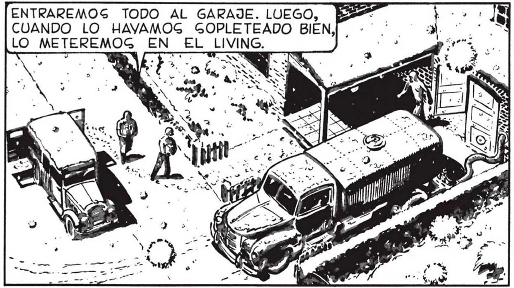
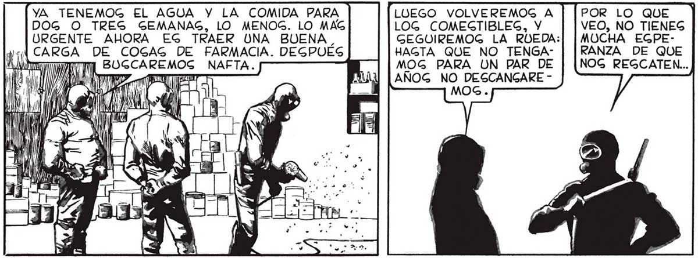

54 ¡PRONTO, PABLO! ¡TRAE , LOG RIFLEG! ME PONDRÉ EL TRAJE EN GEGUIDA! ¡GE DETIENE DE: LANTE NUEGTRO! SN ¡EGTE FAVALLI EG ON GENIO! ¡MIREN EL CAMION AGUATERO QUE TRAE LOCAS! ¡EL AGUA DEL TANQUE HA DE EGTAR GIN CONTAMINAR ! ¡AHORRA UN MILLON DE VIAJEG CON LA CARRETILLA! YA TENEMOG EL AGUA Y LA COMIDA PARA DOG O TRES GEMANAG, LO MENOG. LO MAG URGENTE AHORA EG TRAER UNA BUENA. ¡| CARGA DE COGAG DE FARMACIA. DEGPUES PP AAN 0 BUGCAREMOSG NAFTA. MS 1) W] TE a hu | le % ¡UN MOMENTO, JUAN! ¡AHÍ BAJA UNO ! QuizX PABLO CHOG DIAS. LUEGO VOLVEREMOG A LOG COMEGTIBLEG, Y GEGUIREMOG LA ROEDA: HAGTA QUE NO TENGAMOG PARA UN PAR DE AÑOG NO DEGCANGARE MOG. POR LO QUE VEO, NO TIENEG MUCHA EGPERANZA DE QUE NOG REGCATEN... A ALC 5 "LA ESTRE ENTRAREMOS TODO AL GARAJE. LUEGO, BB CUANDO LO HAVAMOG GOPLETEADO BIEN,| Ln , po E ERA FAVALLI... PARA AHORRARGE EL IR Y VENIR CON LA CARRETILLA HABIA, SACADO EL FORGON DEL ALMACEN... EXAGERABA, [LO METEREMOG EN EL LIVING. ÉN MENOG DE PERO ERA CIÉR 7 RNE A QUINCE MITO: LA GALIDA NUTOG HABÍADE LUCAG Y FA- MOG DEGCARVALLI NO PUDO GADO EL FUR: GER MAG FRUC- GÓN. Y QUEDÓ TÍFERA. EL FOR CONECTADA GON VENÍA A- LA MANGUERA TEGTADO DE DEL TANQUE COMEGTIBLEG A TRAVEG DE ENVAGADOG; EL UN ORIFICIO TANQUE, NOG QUE FAVALLI REGOLVÍA EL HIZO HERMÉPROBLEMA DEL TICO CON AGUA POR MO- CEMENTO. LA VERDAD QUE NO, JUAN... ¿COMO TENER EGPERANZAG CUANDO NO PODEMOG CAPTAR EN LA RADIO NINGUNA EMI GORA? EGTAMOG ANTE UN' DEGAGTRE MUNDIAL: YA NUNCA EL MUNDO VOLVERA' A GER EL MISMO.

